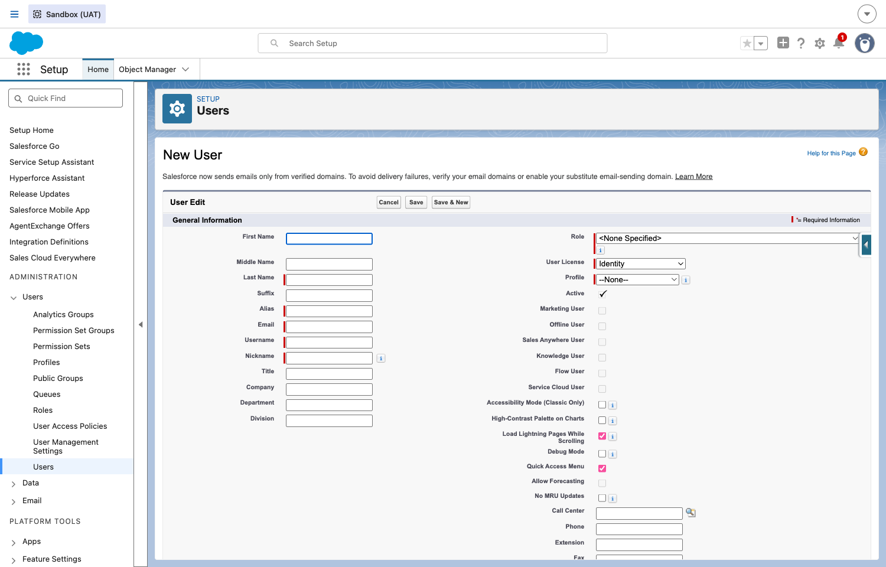
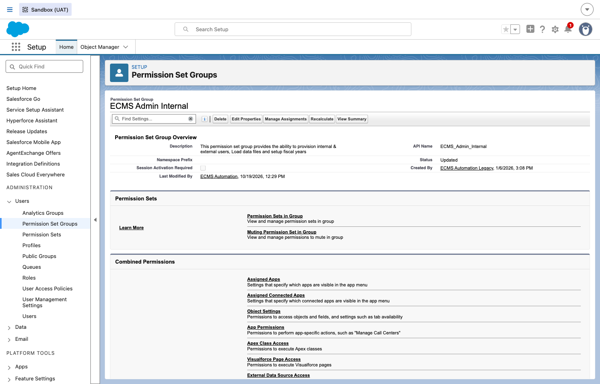
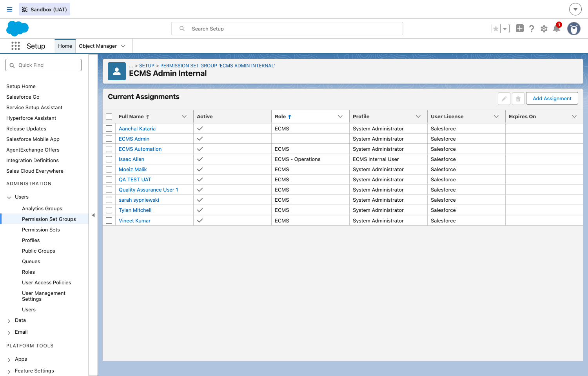
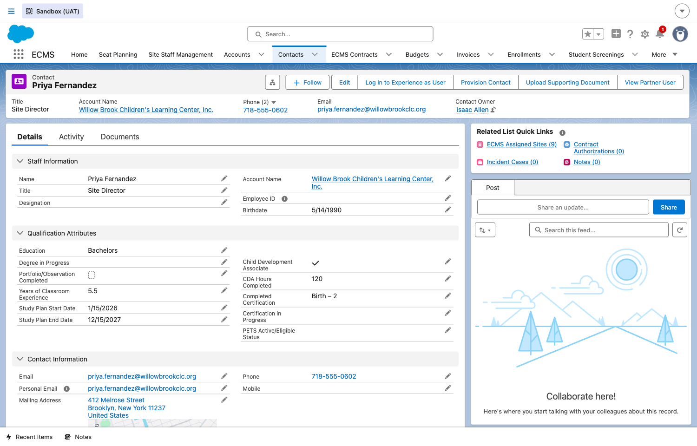
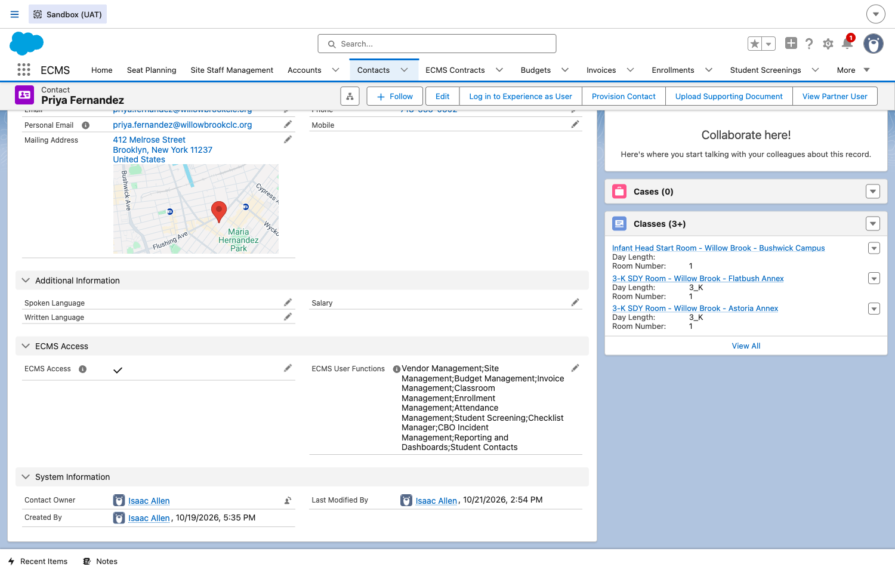
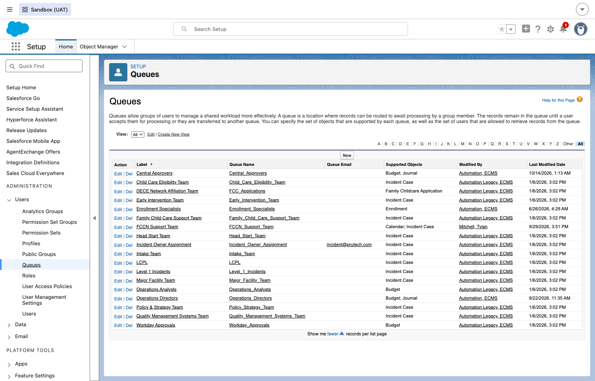
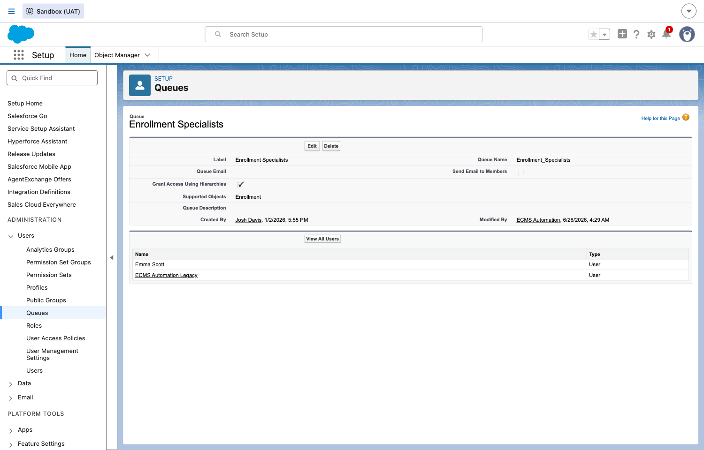

Administrator Guide
How to provision ECMS users and manage their access — Profiles, Permission Set Groups, the CBO-specific User Functions picklist, and Queues. This guide is for DOE/ECMS system administrators setting up new users and permissions, not for day-to-day ECMS use by Operations staff, vendors, or FCCN network staff — see the other guides in this collection for that.
Answer this first — it tells you exactly which sections below actually apply to you, so you're not reading all 14 steps for a single new user.
| User type | Access mechanism | Where to go |
|---|---|---|
| New User → Internal DOE User Operations staff, Enrollment Specialists, Incident Team, Leadership… |
Profile = ECMS Internal User + Permission Set Group(s) |
Jump to Steps 1–3 → |
| New User → CBO Vendor User Community-Based Organization staff |
Contact + Portal User + ECMS User Functions picklist — no PSG |
Jump to Steps 4–6 → |
| New User → FCCN Vendor User Family Childcare Network staff |
Profile = ECMS Community User + Permission Set Group(s) |
Jump to Steps 7–8 → |
Full Persona Permissions Matrix (all personas, all modules): Link pending — the master spreadsheet also contains internal sandbox test-user credentials on separate tabs, so a sanitized copy is being prepared with the Dev Team before it can be linked here publicly. Ask your ECMS admin lead for the current location in the meantime.
Overview — how ECMS access control actually works
Before provisioning anyone, it helps to understand that ECMS splits access control three different ways, and mixing them up is the single most common cause of "why can't this new user see X":
- Profile — controls which app and basic platform-level permissions a
user gets (internal vs. portal, API access, etc.). In ECMS there are only a handful of real Profiles,
and — this is the part that surprises new admins — Profile does NOT differentiate
between ECMS personas. Every internal DOE persona (Operations Director, Operations Analyst,
Enrollment Specialist, Incident Management Team Member…) shares the exact same Profile,
ECMS Internal User. Every FCCN external persona sharesECMS Community User. - Permission Set Group (PSG) — this is what actually differentiates one persona from another, for both internal DOE users and FCCN external users. A user is typically assigned more than one PSG at once (confirmed live — a single FCCN Network Contact user in this org holds 10+ PSGs simultaneously, one per function they need).
- ECMS User Functions (CBO vendor users only) — CBO vendor personas work
differently from everyone else. Instead of PSGs doing the differentiation, a CBO Contact gets a
multi-select picklist field,
Contact.ECMS_User_Functions__c, with values likeBudget Management,Invoice Management,Site Management, etc. — each one unlocking its own Apex sharing rules for that module. Do not try to provision a CBO vendor user with a PSG the way you would an internal or FCCN user — it's the wrong mechanism for that persona type and won't grant the access you expect.
Provisioning an Internal DOE user
1Create a new Internal DOE user
DO In Setup, go to Administration → Users → Users, then click New User.
RESULT A standard Salesforce New User form opens. Fill in the
person's name, a unique Username (must be email-format and globally unique across all
Salesforce orgs, not just this one) and Email, set User License to
Salesforce, and set Profile to ECMS Internal User.

<None Specified> unless you've been
told a specific Role hierarchy reason to set one — ECMS's real persona differentiation happens
via PSG assignment (next step), not Role.
2Assign a Permission Set Group
DO Go to Setup > Permission Set Groups, search for the PSG matching the new user's persona (see the reference table below), open it, and click Manage Assignments → Add Assignment.
RESULT The PSG's detail page shows its description, its member Permission Sets, and a Current Assignments list of every user currently holding it. Adding the new user here grants them everything that PSG bundles together.

ECMS Admin Internal: "provides the ability to
provision internal & external users, load data files and setup fiscal years."
ECMS Admin Internal — confirmed live, every
assignee shares Profile ECMS Internal User; the PSG is what actually differs between
them.ECMS Internal Application User-type base access on top of their
role-specific PSG — check the reference table for the full combination, not just one entry.
3Internal persona → Permission Set Group reference
Confirmed live against the org's real 56 Permission Set Groups (not assumed from a spec):
| Persona | Permission Set Group | Profile | Also needs Queue membership? |
|---|---|---|---|
| ECMS Admin / System Administrator | ECMS Admin Internal | ECMS Internal User | No |
| Operations Director / Deputy Operations Director | ECMS Operations Director Internal | Yes — Operations Directors queue | |
| Operations Analyst | ECMS Operations Analyst Internal | Yes — Operations Analysts queue | |
| Enrollment Specialist | ECMS Enrollment Specialists | Yes — Enrollment Specialists queue | |
| Incident Management Team Member | ECMS Incident Intake Team | Yes — the Incident-related queues (e.g. Intake Team) | |
| ECMS Leadership (read-only) | ECMS Leadership Internal | No | |
| Leadership Coach | ECMS Leadership Coaches | No | |
| Instructional Coordinator | ECMS Instructional Coordinators | No | |
| Social Worker | ECMS Social Workers | No | |
| Portfolio Team Member | ECMS Portfolio Team | ECMS Internal User | No |
Provisioning an External CBO vendor user
4Enable a CBO vendor Contact for portal access
DO CBO vendor users start life as a Contact record under their Account (Site Staff record for them must already exist). Open the Contact, and confirm ECMS Access is checked.
RESULT Once ECMS_Access__c is true and the Contact has
been enabled as a portal/partner user (via Provision Contact or the standard "Enable as
Partner User" action), action buttons appear on the Contact: Log in to Experience as
User, Provision Contact, View Partner User.

5Set ECMS User Functions (CBO only)
DO On the same Contact, scroll to the ECMS Access section and edit ECMS User Functions — a multi-select picklist.
RESULT Each value you add unlocks that module's own Apex sharing
rules for this Contact (e.g. adding Budget Management grants read/edit access to Budgets
and their related records for this vendor's assigned Sites). A Vendor Admin persona typically holds
most or all values; a narrower persona like "Budget Creator" would hold just Budget
Management (plus whatever base access it depends on).

6CBO User Function → module reference
| CBO Persona | ECMS User Function value(s) |
|---|---|
| Vendor Admin | All values — highest level of visibility, can create/assign new vendor users |
| Budget Creator | Budget Management |
| Invoice Manager | Invoice Management |
| Site Manager | Site Management |
| Attendance Taker | Attendance Management |
| Enrollment Manager | Enrollment Management |
| Classroom Management | Classroom Management |
| Student Screener | Student Screening |
| Checklist Manager | Checklist Manager |
Provisioning an External FCCN user
7Provision an FCCN external user
DO FCCN external users (Network Director, Education Specialist,
Monitoring Specialist, Family Worker, Education Director, Affiliation Manager) use the exact
same mechanism as Internal DOE users — Profile + Permission Set Group — NOT the
User Functions picklist. Set Profile to ECMS Community User, then assign the matching PSG
from the table below, the same way as Step 2 above (Setup > Permission Set Groups > find the PSG
> Manage Assignments > Add Assignment).
RESULT Confirmed live: a real Network Contact user in this org holds
10+ PSGs at once (one per function — incident reporting, affiliation management, education
specialist logs, reporting/dashboards, etc.), all stacked on top of the single ECMS Community
User Profile.
8FCCN persona → Permission Set Group reference
| FCCN Persona | Permission Set Group |
|---|---|
| Network Director (highest visibility) | ECMS Network Admin External |
| Education Specialist | ECMS FCCN Education Specialists |
| Education Director | ECMS FCCN Education Directors |
| Monitoring Specialist | ECMS FCCN Monitoring Specialists |
| Family Worker | ECMS FCCN Family Workers |
| Affiliation Manager | ECMS FCCN External Affiliation Management |
| Student Screener (CBO & FCCN) | ECMS External Student Screeners |
| Enrollment Manager (CBO & FCCN) | ECMS External Enrollment Specialist |
| Classroom Management (CBO & FCCN) | ECMS External Classroom Managers |
Queues and case/incident routing
9View Queues and what they route
DO Go to Setup > Administration > Users > Queues.
RESULT The full list of real Queues in this org, each with a
Supported Objects column showing what it routes. For example: Enrollment
Specialists routes Enrollment approval requests, Operations Analysts/Operations
Directors route Budget and Budget/Journal approvals, and most Incident-related queues
(Intake Team, Level 1 Incidents, Incident Owner Assignment,
etc.) route Incident Case.

10Open a Queue and manage its members
DO Click into a Queue's name from the list.
RESULT The Queue detail page shows its supported object(s) and a
member list. Use Edit to add or remove members — anyone on this list can see and
act on records routed to the queue (e.g. the Enrollment Specialist approval step we rely on throughout
the rest of this guide collection routes to whoever is a member of the Enrollment
Specialists queue).

Enrollment Specialists.Post-Provision Validation Steps
Don't consider a user "done" the moment Profile/PSG (or ECMS User Functions, for CBO) is assigned. Confirm the access actually works end to end — this catches the lag/propagation issues covered in Troubleshooting below before they turn into a confusing "it's not working" ticket days later.
11Validate the new user's access end-to-end
DO Before closing out any provisioning request — internal, CBO, or FCCN — walk through this checklist:
- User can log in. Internal: have them attempt a normal Salesforce login (or confirm via "Login History" in Setup). CBO/FCCN: use Log in to Experience as User from their Contact, or have the vendor/network user try their own portal login once their account is activated.
- User sees the ECMS application. Internal: the App Launcher shows ECMS as an available app. CBO/FCCN: the portal home page loads with the expected ECMS branding and navigation — not a blank page or a generic Experience Cloud default.
- User can access their assigned module and Site. Open the specific tab/module their persona needs (e.g. Enrollments for an Enrollment Specialist, Budgets for a CBO Budget Creator) and confirm it loads without a permissions error.
- User can see the records they should see. A tab loading is not enough — open an actual real record (a specific Enrollment, Budget, Site, etc.) that this persona should have visibility into, and confirm it opens cleanly rather than showing an "insufficient privileges" or blank-detail error.
- User receives email notifications, if their persona depends on one. Personas tied to an approval workflow (Enrollment Specialist, OA/OD, Incident team) should receive a real notification/approval email during this check — email deliverability problems look identical to an access problem from the user's side ("I never got anything"), but are a separate issue to diagnose.
RESULT A user who passes all five checks is genuinely ready to use ECMS for their role — not just "has a PSG assigned."
Deactivating a User
Use this whenever access needs to be fully revoked. Common cases: an employee leaves DOE, vendor staff leaves their organization, or an FCCN worker changes role and needs their old access removed before being re-provisioned under a new persona. Deactivating the User record alone is necessary but not sufficient — stale PSG and Queue memberships left behind can silently re-apply if the account is ever reactivated, so all three steps below are part of a complete offboarding.
12Deactivate the User record
DO Open the User record (Setup > Users > Users for internal users, or the person's Contact → related User for CBO/FCCN external users), click Edit, uncheck Active, and Save.
RESULT The user can no longer log in, internally or through the portal. Records they previously owned are not deleted or automatically reassigned — review Ownership separately if that matters for your case.
13Remove Permission Set Group assignments
DO For each PSG the user holds, go to Setup > Permission Set Groups, open that PSG, find the user under Manage Assignments, select them, and click Remove. Repeat for every PSG they hold — most real personas hold more than one (see the reference tables above).
RESULT The user no longer inherits that PSG's permissions.
14Remove Queue memberships
DO Go to Setup > Administration > Users >
Queues, open each Queue the user belonged to (Enrollment Specialists,
Operations Analysts, the Incident-related queues, etc.), click Edit, and
remove them from the member list.
RESULT Records routed to that queue going forward are no longer visible to, or actionable by, the deactivated user.
Troubleshooting access issues
Sharing recalculation after a PSG assignment, a Contact-level field change, or a Provision Contact grant is not always instant — confirmed live, this project has repeatedly seen a short lag (up to several minutes) before access actually takes effect. Before concluding something is broken, wait a few minutes and re-check, rather than immediately troubleshooting permissions further.
Check whether the persona actually needs more than one PSG stacked together — most
real personas in this org hold several PSGs at once, not just one. Also confirm you assigned the right
kind of access for the persona type: internal/FCCN personas need PSGs; CBO vendor personas need
the ECMS User Functions picklist instead (see Overview above) — assigning a PSG to a
CBO Contact's User won't substitute for the picklist.
Never guess a PSG name from what seems logical — search live and confirm the description field,
which usually states plainly what the PSG is for (e.g. ECMS Admin Internal's own
description: "provides the ability to provision internal & external users, load data files and
setup fiscal years"). The reference tables in this guide reflect what's live in UAT today, but PSGs can
be added or renamed over time.